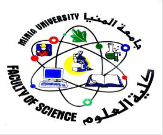
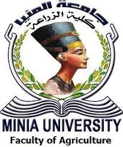

كلية الصيدلة
نشئت بالقرار الجمهورى رقم (84) بتاريخ 14/4/1997 لتنضم إلى كليات القطاع الطبى بجامعة المنيا 1ـ التطوير المستمر للبرامج الأكاديمية التي تطرحها الكلية بما يحقق مداوامه الارتقاء الكيفي بمستواها واستمرار برامج جديدة في بعض المجالات والتخصصات التي تحتاجها مختلف مؤسسات الدولة 2ـ تطوير العملية التعليمية في اتجاه تحديث طرق التعلم والتعليم والاستمرار في إنشاء معامل بحوث متخصصة وتحديث المعامل البحثية بأقسام الكلية . تمنح جامعة المنيا بناء على طلب مجلس الكلية الدرجات العلمية والدبلومات الآتية: أولاً:درجة البكالوريوس فى العلوم الصيدلية ثانياً:درجة الماجستير فى العلوم الصيدلية ثالثاً: درجة دكتوراه الفلسفة فى العلوم الصيدلية رابعاً:دبلومات الدراسات العليا
....معرفة المزيد.png)
كلية الطب البيطري
وافق مجلس جامعة المنيا بجلسته رقم (5) المنعقدة بتاريخ 22/1/2013 علي انشاء كلية الطب البيطري بجامعة المنيا وافق مجلس جامعة المنيا بجلسته رقم (4)المنعقدة بتاريخ 24/12/2013 علي مقترح لائحه كلية الطب البيطري بجامعة المنيا تلتزم الكلية بتوفير مجال تعليم و تعلم على مستوى عال و متقدم من الجودة للطلاب و تنمية قدرات أعضاء هيئة التدريس، و إجراء وتطوير البحوث العلمية بما يخدم المجتمع و البيئة ، خاصة في محافظة المنيا، و أن يكون لها دور فعال في الحفاظ على صحة و إنتاج الحيوان و الصحة العامة و سلامة الأغذية
....معرفة المزيد

كلية العلوم
نشئت الكلية عام 1991 بالقرار الوزارى رقم (953 ) تابعة لوزارة التعليم العالى وصدر القرار الجمهورى رقم(329 ) بتاريخ 1/10/1998 بنقل تبعية الكلية إلى جامعة المنيا تمنح الكلية درجة البكالوريوس فى اربع برامج علمية كما تمنح درجة الدبلوم فى 11 برنامج ودرجة الماجستير فى 11 برنامج علميا والدكتوراة فى 11 برنامج عليميا
....معرفة المزيدكلية السياحة والفنادق
أنشئت كلية السياحة والفنادق بجامعة المنيا بالقرار الجمهورى رقم (419) بتاريخ 27/12/1995 وبدأت الدراسة الفعلية بها فى العام الجامعى 97/98. وتم نقل قسم الإرشاد السياحى بفرقه الأربع من كلية الآداب لكلية السياحة والفنادق بقرار من مجلس الجامعة . - تضم الكلية ثلاثة أقسام : ... قسم الإرشاد السياحي . قسم الدراسات السياحية . قسم الدراسات الفندقية . - تمنح جامعة المنيا بناء على طلب مجلس الكلية الدرجات العلمية : أولاً : درجة البكالوريوس فى أحد التخصصات الموجودة بالكلية . ثانياً : دبلوم الدراسات العليا لمدة سنتين فى أحد التخصصات الآتية : السياحة . الإرشاد السياحى . إدارة الفنادق . ثالثاً : درجة الماجستير ودكتوراه الفلسفة فى أحد التخصصات الآتية : الدراسات السياحية . الإرشاد السياحى . الدراسات الفندقية . - نظام الدراسة : تتنوع فيها الدراسة بين النظام النظري والتطبيق العملي بحيث يحدث خلالهما نوع من التوازن ليحصل الطالب على المعارف والمهارات التي يحتاجها في حياته العملية. تعتبر اللغات الأجنبية بالكلية هي العامل المشترك بين جميع أقسام الكلية نظرا لأهميتها للطالب في حياته العملية بعد تخرجه حيث تحتم طبيعة العمل التعامل مع الكثير من الإفراد
....معرفة المزيد.png)
كلية دار العلوم
نشأت فى البداية بمسمى كلية الدراسات العربية بالقرار الجمهورى رقم (239) لسنة 1983، ثم أصبحت باسمها الحالى كلية دار العلوم بالقرار الجمهورى رقم(470) بتاريخ 29 /11 /1999 ودخلت الكلية مرحلة التطوير فى 2005 /2006، وتم مراجعة الكلية فى 2007 /2008 وهي فى المرحلة الثانية الاعتماد فى مشروع CIQAP .ولا تكتفى الكلية برسالتها الأكاديمية و تخريج المتخصصين فقط بل تمتد إلى توعية الإنسان و تربية وجدانة و نشر فكر الوسطية الذى يميز مجتمعنا الإسلامى و العرب وتضم الكلية سبعة أقسام وهى علم اللغة والدراسات السامية والشرقية الفلسفة الإسلامية البلاغة والنقد الأدبى والأدب المقارن الدراسات الأدبية التاريخ الإسلامى والحضارة الإسلامية الشريعة الإسلامية النحو والصرف والعروض
....معرفة المزيد.jpg)
كلية الهندسة
رجع إنشاء الكلية إلى البدايات الأولى للمعهد العالى الصناعى المنشأ عام 1957 والـذى تحـول إلى كـلية الهندسـة والتكنولوجيـا بقرار رئيـس مجلـس الـوزراء رقـم (924) بتـاريــخ 2/10/1975 بعدضمها إلى كليات فرع المنيا بجامعة أسيوط،ثم انضمت إلى جامعة المنيا عام 1976 و أنشئت الكلية بالقرار الصادر رقم 47 لسنة 2003 فى 22 فبراير صدرت موافقة السيد أ.د وزير التعليم العالي ببدء الدراسة بالكلية هذا العام الجامعي مبنى أ أقدم مباني الكلية ويضم قسم الهندسة الكيميائية وقسم هندسة البترول ومدرجات الفرقة الإعدادية والإدارة الطبية وإدارة شئون الطلاب و إدارة رعاية الطلاب وإدارة شئون العاملين و الكافتيريا مبنى ب تم انشاؤه عام 1997 و يضم قسم هندسة السيارات والجرارات و قسم هندسة القوي الميكانيكية و الطاقة وقسم الهندسة الكهربائية وقسم الهندسة المعمارية مبنى ج أحدث المباني و قد تم انشاؤه عام 2001 ويضم أقسام الهندسة المدنية و هندسة الحاسبات و النظم و قسمي الهندسة الطبية و هندسة الانتاج والتصميم وبرنامج الميكاترونيات و الربوتات الصناعية بالإضافة إلي مكاتب إدارة الكلية و إدارة الشئون المالية بالإضافة إلي مبني الورش و المسجد ومقر الشئون العامة و إدارة حدائق الكلية و الحرس
....معرفة المزيدكلية الالسن
تتحدد رسالة كلية الألسن في وضع التصور وتقديم واستخدام الآليات التي تقدم للمجتمع خريجاً يتمتع بالمواصفات التي يضعها المجتمع للمتحدث باللغة الأجنبية والمستوعب لثقافة الشعوب المتحدثة بتلك اللغة وبما يكفل الالتزام بالمعايير العالمية . ثم ضمان سبل استمرار احتفاظ ذلك الخريج بالمستوى اللغوي المناسب .يتواكب مع هذه الرسالة خلق الوعي الثقافي وتنمية أخلاقيات التسامح والتقبل بما يسهم في تحقيق العبور الثقافي بين الأفراد من الثقافات المختلفة ومن ثم بين الشعوب . تنمية الطموح الفكري لدى الطلبة بما يوفر البيئة الفكرية الخلاقة اللازمة للدراسات العليا والبحث . الالتزام بمعايير الجودة وتوكيدها المستمر، والتطوير المستمر للمنظومة الإدارية والخدمية للكلية . ثم اعتماد منظومتي التعليم والبحث ومخرجاتهما وفق المعايير المحلية والإقليمية والدولية .
....معرفة المزيدكلية التربية الفنية
تهدف كلية التربية الفنية إلي تحقيق ما يلي : إعداد معلم التربية الفنية بمراحل التعليم قبل الجامعي بمختلف نوعياته ومستوياته. إعداد الكوادر الفنية المؤهلة في مجالات التثقيف بالفن وفي برامج التنمية الاجتماعية مثل الأسر المنتجة ورعاية الشباب وقصور الثقافة والإعلام والمتاحف والفئات الخاصة إعداد برامج التدريب للعاملين في مجالات التربية الفنية في التعليم قبل الجامعي، وفي مجالات التثقيف بالفن. التعاون مع الهيئات المعنية بالتربية الفنية والثقافية محلياً وعربياً ودولياً لخدمة قضايا التربية الفنية إجراء البحوث الأكاديمية في مجالات التربية الفنية والتثقيف بالفن والإسهام في المؤتمرات العلمية المحلية والعربية والدولية.
....معرفة المزيد.png)
كلية التربية النوعية
الأهداف الاستراتيجية لكلية التربية النوعية زيادة كفاءة القدرة المؤسسية وترسيخ ثقافة ضمان الجودة والتطوير المستمر بما يتماشى مع معايير الاعتماد التطوير المستمر للبرامج التعليمية والمقررات الدراسية بما يتواكب مع احتياجات سوق العمل واحتياجات المجتمع طبقا للمعايير الحاكمة تطوير استراتيجية التدريس والتعلم والوسائل الداعمة لهما بما يحقق زيادة الفاعلية التعليمية الاسهام العلمي والفكري في حل قضايا المجتمع عن طريق بحث علمي تطبيقي مبني على أولويات احتياجات فعلية وواقعية للمجتمع المحيط الشراكة الفعالة مع الأطراف المعنية والمستفيدة (مركز تكنولوجيا التعليم وخدمة المجتمع) تحقيق التميز على مستوى كليات التربية النوعية بصعيد مصر متمثلة في اعتماد بعض البرامج
....معرفة المزيدكلية الاداب
تقع الكلية بمنطقة تقسيم شلبى شمال مدينة المنيا على مساحة 17160م2 وبمساحة مسطحة ورأسية تقدر بـ 31023م2 وتضم عددا من المختبرات والمعامل وتبلغ مساحة المسطحات الخضراء 2000م2 بدأت الدراسة فى كلية الآداب ـ جامعة المنيا فى 15 نوفمبر 1970 بموجب القرار الجمهوري 1803 لسنة 1970 وهى تأتى فى الترتيب الرابع بعد كليات الآداب بجامعات القاهرة وعين شمس والإسكندرية فى ضوء هذا التاريخ. وتعمل الكلية على تخريج طلاب فى تخصصات مختلفة تفى بالاحتياجات العلمية والمهنية للمؤسسات الحكومية ورفع قدرات الخريجين الــــــــرؤية تتطلع الكلية لتحقيق تميز علمي وبحثي ومجتمعي في كافة العلوم الإنسانية وعلي المستويين المحلي والإقليمي
....معرفة المزيدكلية الطب
م افتتاح الكلية عام 1976، بموجب القرار الوزاري رقم 1142 لسنة 1976وبدأت الدراسة بها بمرحلة البكالوريوس رسميا فى العام الجامعي 1983-1984 كما تم تخريج أول دفعة من طلاب مرحلة البكالوريوس عام 1989- 1990 وتضم كلية الطب عدد (10) من الأقسام الأكاديمية و ( 14 ) من الأقسام الإكلينيكية. • مدة الدراسةالدراسة لنيل درجة البكالوريوس فى الطب والجراحة خمس سنوات كما يلى: تلتزم كلية الطب بإعداد أطباء مؤهلين علميا قادرين علي تقديم رعاية صحية متميزة , كما تلتزم الكلية بالتطوير المستمر للعملية التعليمية والبحث العلمي المتميز بما
....معرفة المزيدكلية طب الاسنان
نشأت كلية طب الاسنان جامعة المنيا بالقرار الجمهورى رقم (419) بتاريخ 27/12/1995 وبناء علي طلب مجلس الكلية من الجامعة بمنح الدراجات العلمية والدبلومات الآتية: 1-درجة البكالوريوس فى طب وجراحة الفم والأسنان 2-درجة الماجستير فى طب الفم والأسنان وجراحتها M.D.S درجة دكتوراه فى طب الفم والأسنان والفروع الإكلينيكية المختلفةD.D.H.C
....معرفة المزيدكلية التمريض
كلية التمريض هي أحدى كليات جامعة المنيا وتقع داخل الحرم الجامعي. تأسست كلية التمريض بجامعة المنيا في بادئ الأمر بالقرار الجمهوري رقم (184) لسنة (1995) بأسم المعهد العالي للتمريض التابع لكلية الطب. ثم صدر القرار الجمهوري رقم (200) لسنة (2000) بتحويلها إلى كلية التمريض. بدأت الدراسة بها في العام الجامعى97/98 وتضم الكلية الآن نحو 1000 طالب وطالبة. صدر القرار رقم (211) لسنة1997م. بتطبيق اللائحة الداخلية لكلية التمريض بجامعة الإسكندرية على المعهد العالي للتمريض بجامعة المنيا، ثم صدر القرار الوزاري رقم (1053) بتاريخ 5/6/2008 بشآن اصدار اللائحة الداخلية لكلية التمريض جامعة المنيا (في مرحلة البكالوريوس)، وكذلك تم اصدار القرار الوزاري رقم (420) بتاريخ 11/2/2014 بشآن تحديث اللائحة الداخلية لكلية التمريض جامعة المنيا (في مرحلة البكالوريوس)، وفي مرحلة الدراسات العليا صدر القرار الوزاري رقم (2006) بتاريخ 1/8/2013 بشآن اصدار اللائحة الداخلية لكلية التمريض جامعة المنيا في مرحلة الدراسات العليا (نظام الساعات المعتمدة).
....معرفة المزيد

كلية الزراعة
تعتبر كلية الزراعة جامعة المنيا واحدة من أعرق كليات الزراعة فى مصر و الوطن العربى و أفريقيا، و ترجع نشأتها الى عام 1957 حيث بدأت كمعهد عالى زراعى يتبع وزارة التربية والتعليم فى ذلك الوقت, ثم تحول المعهد إلى كلية زراعة عام 1969, تتبع جامعة أسيوط، حتى صدور القرار الجمهورى رقم 93 لسنة 1976 بإنشاء جامعة المنيا (ضمت حينها خمس كليات بمدينة المنيا هى الزراعة والهندسة والآداب والتربية والعلوم). وتقع مبانى كلية الزراعة حاليا داخل حرم الجامعة (شمال غرب مدينة المنيا)، تبلغ مساحة مبانيها 36000 م2 و هى موزعة على خمسة مبان رئيسية و هى مبنى (أ) و يضم إدارة الكلية و ستة أقسام علمية و المكتبة، ومعمل الحاسب الآلي، بينما يضم مبنى (ب) بقية أقسام الكلية العلمية الستة الأخرى و بقية إدارات الكلية. بينما يضم مبنى (ج) مدرجات الكلية الستة، فى حين يشمل مبنى (د) على مكاتب رعاية الطلاب و الأنشطة الطلابية، و مبنى (هـ) يقع به معمل تحليل الأراضي و المياه و المواد النباتية. بينما ملحق مباني مزرعة الإنتاج الحيواني و الداجنى تقع خارج حرم الجامعة (حيث المبنى القديم للكلية خلف كلية طب الأسنان). و منذ العام 2006م تتبع الكلية نظام الساعات المعتمدة فى الدراسة، و تمنح درجات البكالوريوس في ثمانية تخصصات علمية حديثة، كما تمنح درجة دبلوم الدراسات العليا في أربعة عشر تخصصا علميا، ودرجتي الماجستير والدكتوراه في 27 تخصصا علميا. و اللغة العربية هى لغة الدراسة لطلاب مرحلة البكالوريوس، بينما اللغة العربية والانجليزية هى لغة الدراسة لطلاب الدراسات العليا. و لدى الكلية جهاز إداري قوى و منظم و ذو خبرة عميقة، يضم 213 موظف و 91 عامل. و تحوى الكلية ثمانية مراكز و وحدات ذات طابع خاص تشمل 14 شعبة مختلفة، تقوم بدورها على أكمل وجه سواء فى خدمة مجتمع الكلية و الجامعة أو المجتمع المحلى لمحافظة المنيا و جيرانها. كذا يقوم مكتب خدمة المواطنين (CSO) بدور همزة الوصل بين الكلية كمركز علمى و منارة تعليمية و مجتمع محافظة المنيا و جيرانها لتقديم كافة الخدمات و الاستشارات الزراعية.
....معرفة المزيدكلية الفنون الجميلة
* نشأت الكلية بالقرار الوزاري رقم 3444/3/1976. * صدر القرار الوزاري رقم 446 في 3/5/1976م بإنشاء كلية الفنون الجميلة بجامعة المنيا. * بدأت الدراسة بالكلية في العام الجامعي 83/1984 بملحق مبنى كلية العلوم ثم في مبنى خاص بالكلية في العام الجامعي 90/1991 م. * تقع الكلية في مجمع الكليات داخل الحرم الجامعي.و قد بدأت بالأقسام الآتية/الديكور-الجرافيك- التصوير- النحت. * وافق مجلس الجامعة على إنشاء الوحدة بقرار رقم 8 في 22/9/1986 م. * صدر قرار رئيس الجامعة رقم 1236 في 4/11/86 بإنشاء الوحدة لأقسام الكلية. * وافق المجلس الأعلى للجامعات على إنشاء الوحدة الإنتاجية للطلبة في 24/9/1989. * صدر قرار وزاري رقم 1203 في 8/9/94 خاص بإنشاء قسم العمارة وقسم الترميم وصيانة الآثار-شعبة الرسوم المتحركة-شعبة التشكيل الخزفي بقسم النحت. * صدر القرار بتحويل شعبة الرسوم المتحركة إلى قسم. * صدر القرار وزاري رقم 373 في 3/3/1998م بشأن إصدار اللائحة الداخلية للكلية والتى تضم سبع أقسام فنية وهى:- 1- قسم العمارة. 2- قسم الديكور. 3- قسم التصوير. 4- قسم الجرافيك. 5- قسم النحت. 6- قسم الترميم وصيانة الآثار. 7- قسم الرسوم المتحركة.
....معرفة المزيد
كلية الحقوق
تزويد الطلاب بالمعارف والنظريات الاساسية والمتقدمة فى مختلف مجالات القانون العام والخاص ومصادره المتنوعه تمكين الطلاب من تطوير مهاراتهم الذهنية والعملية، وتطوير قدراتهم على التعليم انشاء وتعزيز الجانب المهنى التطبيقى للعلوم القانونية النظرية عند الطلاب، وبناء ثقتهم الذاتية وقدراتهم على حل المشكلات والقضايا تطوير القدرات والمهارات الخاصة بالمرافعات واجراءات التقاضى وسائر متطلبات ميدان العمل القانونى لدى الدارسين والباحثين تمكين الطلاب من إجراء البحوث القانونية، وأوراق العمل والمقالات بمستوى الليسانس والدراسات العليا وفق منهجية علمية سليمة والتعامل مع مصادر المعرفه القانونية تمكين الطلاب من مهارات العمل المختلفه واجادة استخدامها لرفع كفاة آدائه الشخصى والمؤسسى رفع قدرات الطلاب فى التفكير المنطقى والنقد والجدل فى المناقشات القانونية والاجتهاد واختيار الحل المنطقى الملائم من بين الحلول البديلة
....معرفة المزيدكلية التربية
بدأت الكلية تحت اسم (كلية المعلمات) عام 1957 ، حيث كانت فكرة إعداد هيئة التدريس في مدارس البنات تشغل بال اللجان التى عهدت إليها الدولة بتنظيم شئون التربية والتعليم . وقد رأى المسئولون أن الاعتماد على الخريجات من كلية البنات ، جامعة عين شمس لا يكفي لتحقيق هذه الفكرة في المرحلتين الإعدادية والثانوية ، فكان لابد من فتح معاهد عليا وكليات خاصة لإعداد المدرسات ، ومن هنا كان التفكير في إنشاء هذه الكلية . وقد رؤى أن يكون مقرها في الوجه القبلى لأسباب كثيرة منها : التوزيع الجغرافي للمعاهد والكليات ، بالإضافة إلى تشجيع الآباء في الوجه القبلى على إلحاق بناتهن بهذه الكلية ولقد وقع الاختيار على مدينة أسيوط لتكون مقرها . ولكن الدار التى كانت معدة لإنشائها لم تكن ملائمة ، فاتجهت الفكرة إلى مدينة المنيا ووقع الاختيار على المبنى الذى كان يشغله معهد المعلمين الخاص والموجود خلف مبنى المحافظة حالياً . ولقد بدأت الكلية نشاطها في سبتمبر 1957 بشعبتين هما اللغة الإنجليزية والرياضيات وكان عدد طالبات الشعبتين معاً (54) أربع وخمسون طالبة ، إلا أنه في العام التالى افتتحت شعبة اللغة الفرنسية . وفي العام الجامعى 59/1960 تم إنشاء شعبة العلوم ، وبذلك صار عدد الشعب الموجودة بالكلية أربع شعب ، وكانت أول دفعة تخرجت من الكلية عام 1961 في شعبتى الرياضيات واللغة الإنجليزية ، وكان عددها (28) ثمان وعشرون طالبة . وفي عام 1971 صدر القرار الجمهورى رقم (1578) متضمناً إنشاء كلية التربية بفرع جامعة لأسيوط بالمنيا ، واعتبار كلية المعلمات نواة لهذه الكلية ، إلى أن استقلت عن جامعة أسيوط بإنشاء جامعة المنيا بعد صدور القرار الجمهورى رقم (93) لسنة 1976 ، والمتضمن إنشاء جامعة مستقلة قائمة بذاتها تضم خمس كليات من بينها كلية التربية . وقد تم إنشاء شعب اللغة العربية ، والتربية الفنية ، والشعبة الزراعية ، وتربية الطفل، والتعليم الابتدائى ، والجغرافيا بعد ذل
....معرفة المزيدكلية تربية الطفولة
نظراً لاهتمام الدولة بمجال تنمية ورعاية الطفولة فى مصر خاصة بعد اصدار قانون الطفل رقم (12) لسنة 1996م ، والإعلان عن عقدي حماية الطفل المصري (1989م – 1990م ، 2000م – 2010م) ، والدعوة للاهتمام بتربية الطفولة المبكرة ومؤسساتها وإنشاء كليات لرياض الأطفال فى جامعات مصر ، برزت الحاجة إلى إنشاء كلية رياض الأطفال – جامعة المنيا. ـ صدور القرار الوزاري رقم (1408) لسنة 2017م، لتغيير مسمي الكلية من كلية (رياض الأطفال) إلي كلية (التربية للطفولة المبكرة).
....معرفة المزيدكلية التربية الرياضية
في 24 أغسطس 1976 صدر قار جمهوري رقم 13 لسنة 1976 لإنشاء جامعة المنيا مستقلة عن جامعة أسيوط على مساحة 310 فدان وكانت تتضمن خمس كليات هي ( التربية – الزراعة – الآداب – العلوم - الهندسة) في العام الجامعي 1981/1982 تم افتتاح كلية التربية الرياضية وكان عدد الطلاب الذين استقبلتهم الكلية هو 57 طالباً وكان نظام الدراسة في الكلية داخلياً حيث كان الطالب مقيماً إقامة دائمة داخل الجامعة وبعد ذلك تم إلغاء هذا النظام .. تخرجت أول دفعة من الكلية عام 1984/1985 ثم استقبلت الكلية أول دفعة للبنات عام 1994/1995 وكان عددهن 14 طالبة
....معرفة المزيدهذا الموقع صمم بواسطة محمد علي